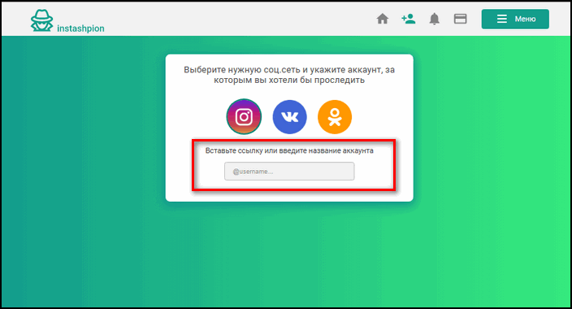
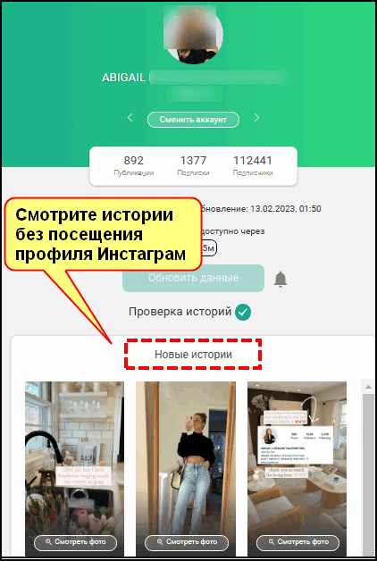
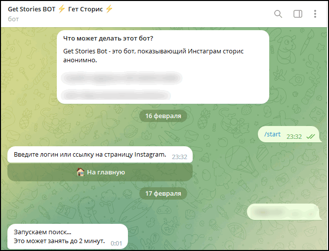
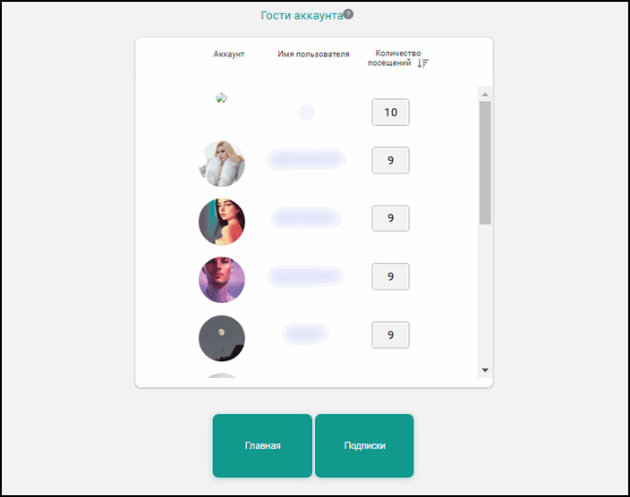

Как посмотреть чужие Истории в Инстаграме анонимно

В Историях отображаются все пользователи, которые их просмотрели. Поэтому, чтобы смотреть Сторис в Инстаграме* анонимно, нужно идти на хитрости, используя сторонние сервисы, Телеграм-боты или фейковые аккаунты.
Как посмотреть чужие Сторис анонимно
Чтобы смотреть чужие Сторис анонимно в Инстаграм* онлайн, пользователю придется применить один из способов:
- создать второй аккаунт, без личных данных;
- использовать онлайн-сервисы;
- Телеграм-боты, с помощью которых можно скачать фото и видео из Историй.
При регистрации с российского номера могут возникать проблемы: код подтверждения не всегда приходит. Поэтому пользователю пригодится любой из сервисов временной аренды номеров. Среди них популярны с бесплатным временным номером из зарубежных стран. После создания личной страницы нужно подписаться на человека. Второй вариант – онлайн-сервисы. Их преимущество в том, что не нужно создавать очередную учетную запись. Это анонимно и просто: указать никнейм и найти человека, просмотреть Истории, а в отдельных случаях и дополнительную информацию.
№1 Сервис Instashpion: все тайное станет явным
Сервис анонимных просмотров Сторис в Инстаграм* Instashpion предлагает простой и быстрый способ, узнать как дела у друзей и близких. Инсташпион работает с открытыми аккаунтам, с однодневным пробным периодом. В течение суток пользователь сможет посмотреть до 10 интересующих его страниц, и не только Сторис.
В Инсташпионе представлен целый комплекс услуг для слежки за аккаунтом, а также проверки своего:
- гости и тайные поклонники. Кто посещает профиль и остается незамеченным;
- подписки и отписки. На кого подписан пользователь и кто удалился из друзей;
- Истории. Последние временные публикации, добавленные владельцем аккаунта;
- посты и Reels. Просмотр записей на странице;
- комментарии и лайки. Взаимодействия:: кто поставил лайк и кого отметил владелец профиля.
В сервисе есть бесплатный период, разработчики дали такую возможность, если перейти по ссылке с нашего сайта, после – можно купить платную подписку и наблюдать за десятью аккаунтами одновременно. Как анонимно следить за чужим профилем в Инстаграме*:
- Перейти на сайт Инсташпиона – нажать: «Попробовать бесплатно».

- Указать никнейм – в выпадающем списке появится подсказка, где нужно выбрать страницу.
- Запустить проверку и дождаться, пока появится информация.

Данные можно обновлять ежедневно, чтобы наблюдать за недавно опубликованными Историями. С помощью кнопки «Смотреть фото», доступно расширение снимка и возможность сохранить на компьютер.
№2 Создаем второй профиль
Анонимно в Инстаграм* фото можно просматривать, если создать дополнительный аккаунт. В этом помогут сервисы аренды номеров: выбрать бесплатный и зарегистрировать на него временный аккаунт. Таким методом можно просматривать не только общедоступные страницы, но и приватные. Создание второго профиля:
- Открыть приложение Инстаграма* – нажать сверху три полоски меню «Настройки».
- Перейти к пункту «Добавить аккаунт» - открыть номер временных номеров.
- Выбрать актуальный – скопировать и перейти к регистрации новой учетной записи.
Пользователю придется придумать пароль, никнейм, возможно добавить адрес электронной почты, чтобы не потерять доступ. Свой основной аккаунт можно отыскать в приложении, нажав по никнейму: появится список всех страниц, зарегистрированных на этом телефоне.
После новой процедуры авторизации не забывать переключаться между основным и фейковым, чтобы не попасть в список «Зрителей2». А интересующий аккаунт можно отыскать через поиск, оформив в дальнейшем подписку или сохранив какую-либо из публикаций в закладки для быстрого доступа.
№3 В помощь Телеграм-боты
Сторис анонимно в Инстаграме* смотреть без регистрации возможно с помощью Телеграма. В мессенджере можно найти ботов, которые направлены на выгрузку временных Историй, просмотр. Для работы с мессенджером необязательно иметь страницу в Инстаграме*. Как посмотреть чужие Истории:
- Открыть Telegram – вписать в поиске: «GetStories Bot».
- Найти бота – подтвердить команду «/start».

- Вписать никнейм нужного пользователя – посмотреть Истории.
С мобильной версии, чтобы скачать изображение, нужно:
- Открыть картинку – нажать сверху три точки.
- Сохранить в Галерею – подтвердить загрузку на смартфон.
Как самому узнать кто смотрел Истории
Если публикация была добавлена менее суток назад, то в разделе «Зрители», владелец страницы найдет всех кто посещал аккаунт и просматривал Сторис. Увидеть зрителей в Инстаграме*:
- Зайти в профиль – нажать по своим недавно добавленным записям.
- Нажать снизу по значку в виде «глаза» - появится список зрителей.

Или воспользоваться сервисом Инсташпион (ссылка на бесплатный период выше), указав свой профиль в список наблюдения. Для перечня гостей не нужно указывать пароль, как и с другими аккаунтами: указать только никнейм и запустить проверку базы данных.Истории в Инстаграме*: нововведения
Функция Историй появилась в 2016 году и до сих считаются самым частоиспользуемым разделом, даже в сравнение с Reels и публикациями. Особенность Stories в том, что показаны все зрители, даже среди неподписанных пользователей. Такой нюанс позволяет владельцу страницы смотреть гостей своего профиля. В последних обновлениях появилась проблема с отображением посетителей – не показываются неподписанные или находятся в конце списка. Тем, кто столкнулся с этой ошибкой, помогает обновление или переустановка приложения. Другие нововведения в Сторис:
- если История превышает 15 секунд, автору предлагают записать видео для Reels;
- можно использовать маски для фотографий, хранящихся в Галерее мобильного устройства;
- в «Зрителях» первыми отображаются те, с кем у владельца аккаунта больше всего взаимодействий.
Поэтому, если обладатель профиля уверен, что его смотрит большее количество людей, чем показано в «Зрителях» - нужно обновить Инстаграм* через Play Market или App Store. Посмотреть чужие Сторис не получится лишь в одном случае – если аккаунт закрыт и не оформлена подписка. Но в этом не помогут даже сторонние способы.